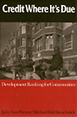

Lessons learned from successful development banks in U.S. communities
Lessons learned from successful development banks in U.S. communities


 Lessons learned from successful development banks in U.S. communities
Lessons learned from successful development banks in U.S. communities

|  |
Credit Where It's DueDevelopment Banking for CommunitiesJulia Ann Parzen and Michael Hall Kieschnickpaper EAN: 978-1-56639-185-6 (ISBN: 1-56639-185-7) |
"[A] very useful framework for thinking about development banking and the planning and operational considerations one must face for more development banking to occur and to be effective."
—Richard Schramm, Department of Urbasn Studies and Planning, M.I.T.
Analyzing the field of community development banking, Parzen and Kieschnick explain how financial institutions can serve the economic development needs of communities in which they operate without sacrificing prudent banking practices. Relying on firsthand knowledge, the authors show why development banks are worthy of the attention of community development activists, financial institutions that want to improve their performance, and policymakers trying to fix the financial system. The authors describe the successes of a number of community development banks, such as South Shore Bank in Chicago, Northern Community Investment Corporation in Vermont, and Self Help Credit Union in North Carolina.
Parzen and Kieschnick explore the factors that contribute to or limit development bank effectiveness, and they focus on how banks come to terms with conflicts between serving their markets and surviving. They offer a plan for achieving the full economic development potential of development banking, including specific steps for development bankers, mainstream financial institution, government agencies, and foundations.
"Credit Where It's Due makes an important contribution in a vitally needed area of financial services. At a time of depressed economic activity, financial failure, and insupportable debt, this work shows how to mobilize capital where it is needed most urgently. This comprehensive work points the way for effectively utilizing this important tool to meet the growth needs of our society."
—Leland S. Prussia, Chairman Emeritus, Bank of America
"Finally! This is a book that puts both bankers and community organizers reading from the same page. If bankers had read this book ten years ago, some might have avoided billions of dollars in red ink, some might have kept out of jail, and whole communities could have been saved and revived with the money invested. A careful and close reading of Credit Where It's Due will help direct all of us in moving capital to its use for the greatest good: creating affordable housing and jobs."
—Wade Rathke, Chief Organizer, ACORN
"This is a thorough discussion of the rationale for several types of development finance institutions; it will raise the level of debate and improve the chances of further adaptation and experimentation in the light of growing U.S. need for such vehicles."
—Mary Houghton, President, The Shorebank Corporation
"This well-crafted book...is essential reading not only for those directly involved in creating development banks, but also for anyone working in the economic development field."
—Robert E. Friedman, Chair, Corporation for Enterprise Development, and Chair, Association for Enterprise Opportunity
List of Tables
Acknowledgments
1. Introduction
2. Capital-Market Failures
3. Effective Development Banks
4. Planning and Evaluation
5. Models The Serve Development
6. Sustainability
7. Managing the Risk
8. Minimizing the Costs of Operations
9. Capital Ins and Outs
10. The Future of Development Banking
Notes
Glossary
Index
Julia Ann Parzen is a Program Consultant in economic development and conservation for the Joyce Foundation.
Michael Hall Kieschnick is President of Muir Investment Trust and Sand County Ventures in San Francisco.
© 2015 Temple University. All Rights Reserved. This page: http://www.temple.edu/tempress/titles/759_reg.html.